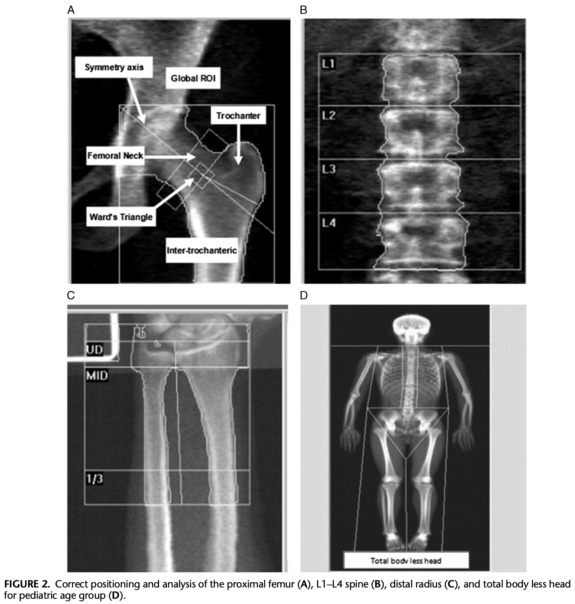
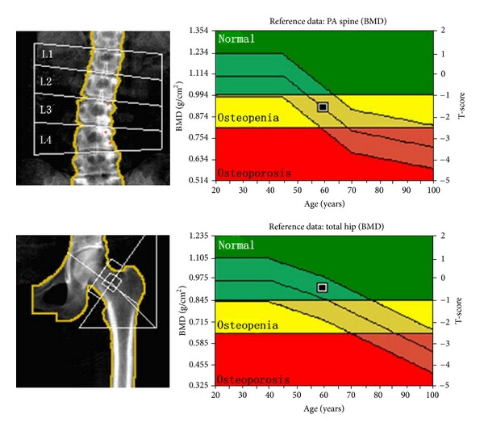

Pre-Lab Activity
Read Chapter 25 of the textbook which relates to the topic of osteoporosis.
Watch the DXA content in your Canvas modules to learn important foundational knowledge about bone and body composition, providing important context for DXA use in various populations and the the activities in this lab.
Lab Session
Introduction
The majority of bone mass is accrued during childhood and adolescence, with peak bone mass occuring and maintained throughout an individual’s 20s, Osteoporosis is a disease that is characterised by loss of bone mineral content (BMC) and density (BMD), resulting in reduced bone strength and an increased risk of fracture. The loss of BMC is often associated with ageing, postmenopausal hormone changes, secondary factors (e.g., immobility, medications), or a combination of these factors. Other metabolic factors can play a role, including vitamin (esp. Vit D) and mineral (esp. Calcium) deficiencies. In general, peak bone mass is achieved around the age of 30, after which bone mineral breakdown tends to exceed its formation. As such, maximising bone mass in the teens and early adulthood is valuable for maintaining bone health in your older age by delaying the onset of clinically-relevant osteoporosis.

Dual-energy X-ray Absorptiometry (DXA) is a quick, valid, and reliable method for the measurement of bone mineral density (BMD). DXA is a valuable tool for the diagnosis of osteoporosis or low bone mass (osteopenia). Through one-off or longitudinal measurement of bone mineral content (BMC) and area at various sites with increased fracture risk, clinicians can calculate BMD and compare that to normative data to estimate differences to young and age-matched populations, and fracture risk. It can also assist clinicians in identifying rapid changes in bone mass that may be an indication of secondary bone loss or other metabolic factors. By identifying these changes early, clinicians can prescribe interventions (medications, exercise) that can help to halt the loss of bone mass before fracture.
The most common sites for DXA assessment of bone mineral content are the lumbar vertebrae (L1-L4, Antero-Posterior Spine) or hip (femoral neck and total proximal femur) as these sites encounter a large proportion of all vertical loading during activities of daily living and become more prone to fracture with low bone mass. The forearm forearm (radius) is less commonly used.

As per the WHO Classification, determination of low bone mass (osteopenia) is made when BMD Z-score is at least 2 standard deviations below the age-matched mean or the T-score is between -1 and -2.5 SD below the young adult mean, which indicates a possible secondary cause of accelerated bone loss. A determination of osteoporosis is made when the T-score ≤ -2.5 SD.

DXA can also be used for total body composition scanning to measure lean and fat mass. This is a useful tool for assessing body composition in most populations, especially as a way to monitor longitudinal changes in response to lifestyle changes, e.g., diet and exercise. In the UTS Clinical Imaging Lab (Level 4, Moore Park) our accredited DXA technicians frequently perform body composition scans for elite athletes from sports clubs across Sydney. The lab also performs scans for the general public to assess bone and body composition for their own personal interest and health goals.
The first part of this lab provides background on DXA assessment for bone and body composition. We will cover principles of DXA measurement and interesting cases.
The second part of this lab will be a practical activity integrating your knowledge developed throughout the subject in prescribing and modifying exercises for individuals with various chronic clinical conditions. These are critical skills for Accredited Exercise Scientists and anyone wanting to pursue a career as an Accredited Exercise Physiologist.
As with any clinical population, there are important considerations to make when assessing, prescribing, and delivering exercise programs for clinical populations. The objectives of this lab are to:
Examine the role of DXA for the determination of low bone mass - osteopenia and osteporosis
Develop an understanding of exercise prescription considerations for various clinical conditions
Activity - Exercise & Chronic Disease
Throughout this subject we have explored the clinical considerations for exercise prescription in individuals with chronic disease. This has included various assessments of functional capacity, and home- and gym-based training programming. In this lab, we will focus on planning and modifying exercise in a gym-based setting to provide physiological stress that is appropriate for the client and the clinical condition they are living with.
You will be presented with a series of case conditions that you will work through to prescribe and then modify exercises for the case individual. It’s your job in groups to make additional considerations that call upon your resistance training and coaching knowledge to develop appropriate training programming and exercises. This activity will take place in the Exercise Physiology Clinic (Level 2) and Resistance Training (Level 4) Gyms.
You will select 3-4 case conditions from the table below, and spend ~20 minutes working on each, following the instructions below.
| Condition | Patient Considerations |
|---|---|
| Hypertension | BP is 165/100 |
| Myocardial Infarction | 6 weeks post CABG Surgery |
| Heart Failure | Reporting high level of fatigue |
| Peripheral Vascular Disease | Leg claudication upon exertion |
| Stroke | Right side partial hemiparesis |
| Osteoporosis | Affected at the spine and has stooped posture |
| Rheumatoid Arthritis | Affected at hand and wrist - unable to grip |
| Parkinsons Disease | Wrist and hand tremor and bradykinesia |
| Spinal Cord Injury | L2 Paraplegic |
| Cerebral Palsy | Foot drop and sever wrist spasticity |
| Multiple Sclerosis | Arm and hand tremor |
| Diabetes | Type 2 peripheral neuropathy |
| Chronic Obstructive Pulmonary Disorder | Exertional dyspnoea |
| Breast Cancer | 8 weeks post-surgery - double mastectomy |
| Bone Cancer | Recently completed 3rd round of chemotherapy and radiation therapy |
In your lab groups of 5-7 people, you will select an exercise that you are familiar with and move to that equipment
For each exercise chosen, have two people perform 10 reps as a young, healthy individual, while the group observes form and considers the key movement concepts, target muscles, and safety considerations
After completing the set, spend 5-10 minutes as a group considering appropriate exercise modifications to allow an individual with your case condition to complete the exercise safely, considering:
Safe alternative exercises that target the same muscles
Change in positioning or technique to minimise stress on affected body parts
Appropriate progressions to make the exercise more technically or physically challenging if the patient finds it too easy
Appropriate regressions to make the exercise less technically or physically challenging if the patient finds it too hard
Have two people perform 10 reps of your modified exercise (assuming the role of the case patient) while the group provides coaching cues and assists/spots during completion of exercise, and observes movement replication, safety, and suitability (i.e., for individual ability and to achieve tissue stress)
Once the set is complete, reflect on the modified exercise, including how the ‘patients’ felt performing the movement, and any further adjustments you would make
All groups will briefly summarise and discuss their modifications with the class
Select a different case condition and modify the same exercise for the new case patient, repeating steps 3-6
Once you have completed step 7, move to a different gym equipment/exercise and repeat steps 2-7
Notes
Exercise 1 ________________________________
Case Condition 1 ________________________________
Case Notes
Case Condition 2 ________________________________
Case Notes
Exercise 2 ________________________________
Case Condition 3 ________________________________
Case Notes
Case Condition 4 ________________________________
Case Notes
Discussion
Throughout the lab we will be viewing and discussing content related to muscle stimulation for neuromuscular rehabilitation. You can write any notes related to the content, discussions, and practical activities below.